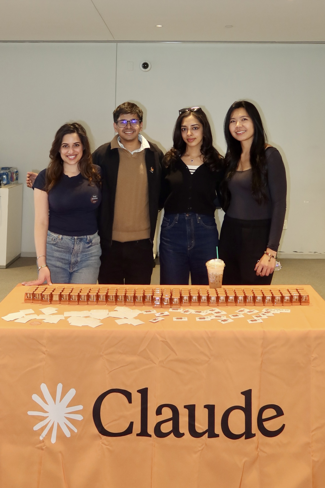

Kaisey: An AI Chief of Staff for Student Life
A four-person build at the Columbia × NYU × Anthropic Claude Hackathon. I led project management and built the LinkUp integration.

The Project
Nine hours. Four builders. One calendar that thinks.
Kaisey is an AI chief of staff that connects a student's calendar, coursework, and career goals into a single intelligent layer — then helps them decide what matters most, right now. Built in nine hours at the Columbia × NYU × Anthropic Claude Hackathon, the product lets students toggle between Academics, Recruiting, Social, and Wellness modes, with Claude re-ranking the day's priorities in real time.
My Role — Project Management & LinkUp Integration
On a nine-hour build with four people and four workstreams, two things determined whether we'd ship: someone keeping the team moving in the same direction, and someone closing the technical gaps no one else owned. I did both.
Keeping Four Workstreams in Sync
I organized the team before the hackathon, mapped each person's strengths to a workstream — product and frontend to Anisha, AI architecture to our Claude integration lead, backend and calendar sync to Tiantian, UX to Siddhant — and ran the build itself. That meant delegating tasks, holding lightweight check-ins to surface blockers early, making scope calls when we ran out of runway, and making sure the demo we walked into the judging room with actually worked end to end.
Bringing Real-Time Context Into Claude
Kaisey needed more than a static calendar to be useful — it needed current context about the world a student is operating in. I integrated the LinkUp API into our backend so Claude could pull real-time information into its reasoning, grounding the priority engine in current data rather than stale knowledge. In our demo, LinkUp powers two live features: a Company Intel card that pulls real-time hiring signals, recent news, and interview tips for any target company a student is recruiting at, and an Events finder that searches Luma and Meetup to surface upcoming hackathons and tech networking events in New York. This means Claude isn't just helping students organize what they already know — it's actively bringing in what's happening right now to help them act on it.
The Bugs That Would Have Broken the Demo
Two fixes mattered most. The calendar view wasn't rendering Sundays — a small bug with an outsized impact, since it meant a quarter of weekend events were invisible. And several timing bugs were causing events to display in the wrong slots, which would have undermined the entire premise of an "intelligent calendar" in front of judges. I tracked both down and shipped the fixes before the demo window.
The Team
- Anisha SubberwalProduct Lead, Frontend, Oura and Google Integration
- Annie Sweta Kaur (that's me)Project Management, LinkUp Integration & Debugging
- Tiantian LuoBackend, API Proxy, Calendar Sync
- Siddhant PatraUX Design, Brain Dump Flow
Tech Stack
- React
- TypeScript
- Tailwind CSS
- Node.js
- Express
- Claude API
- LinkUp API
- Google Calendar API
- OAuth 2.0